Problem 1
Equivalent Resistance Using Graph Theory
Graph Representation
- Nodes: Electrical junctions (including terminals A and B).
- Edges: Resistors with resistance values \( R \).
- The network is represented as an undirected weighted graph:
- Nodes = junctions.
- Edges = resistors labeled with resistance \( R \).
If multiple resistors connect the same pair of nodes, treat them as parallel resistors immediately.
Identifying Series and Parallel
Series:
Two resistors are in series if: - They share a common node \( v \) of degree 2, and - \( v \) is not a terminal node (not A or B).
Then: - Edges \( (u - v) \) and \( (v - w) \) are replaced by a single edge \( (u - w) \). - The equivalent resistance is:
Parallel:
Two or more resistors between the same pair of nodes \( (u, w) \) are in parallel. They are replaced with a single resistor using:
or equivalently,
Option 2: Advanced Task – Full Implementation
Objective
Implement an algorithm to compute the equivalent resistance between two nodes in an arbitrary resistor network using graph theory.
Requirements
The implementation must:
- Accept a circuit graph as input (nodes and resistors as edges).
- Support arbitrary configurations, including nested series and parallel combinations.
- Output the final equivalent resistance between two designated terminals.
Mathematical Background
Series Combination
If two resistors are in series:
Parallel Combination
If two or more resistors are in parallel:
Mathematical Formulation
The algorithm works by recursively applying the series and parallel resistance formulas:
Series Connection:
For resistors \(R_1, R_2, \ldots, R_n\) in series:
Parallel Connection:
For resistors \(R_1, R_2, \ldots, R_n\) in parallel:
Features
Arbitrary Nesting:
- Handles complex networks like \(S(P(S(1,2),3), P(4,5))\)
- Each operation node contains exactly two children (binary tree)
String Parsing:
- Optional string input format:
"S(P(1,2),3)"for \((1 \parallel 2) + 3\)
Error Handling:
- Validates network structure
- Checks for invalid resistor values
Example Calculation
For the network \((1 \parallel 2) + (3 \parallel 4) + 5\):
-
Parallel branches first: $$ 1 \parallel 2 = \frac{1}{\frac{1}{1} + \frac{1}{2}} = 0.6667\ \Omega $$ $$ 3 \parallel 4 = \frac{1}{\frac{1}{3} + \frac{1}{4}} = 1.7143\ \Omega $$
-
Series combination: $$ R_{eq} = 0.6667 + 1.7143 + 5 = 7.3810\ \Omega $$
The code outputs this result with 2 decimal places: \(7.38\ \Omega\).
1
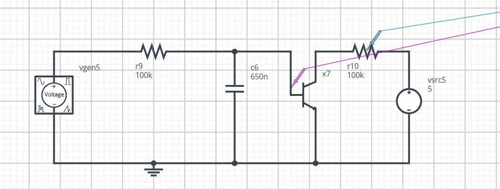

2
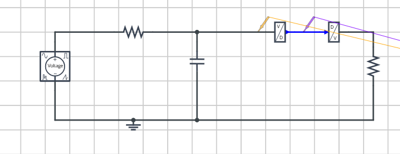
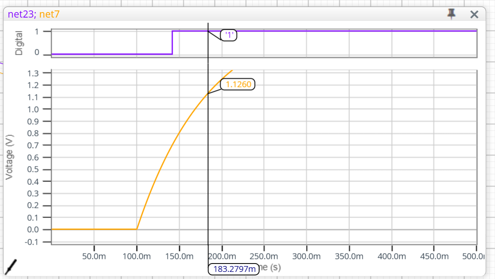
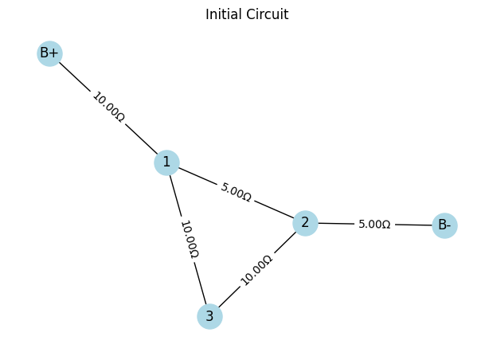
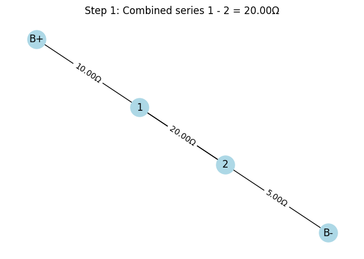
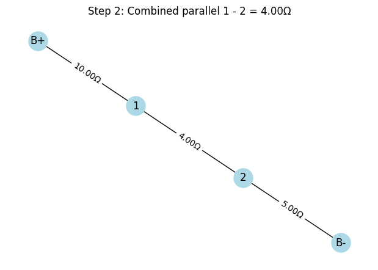
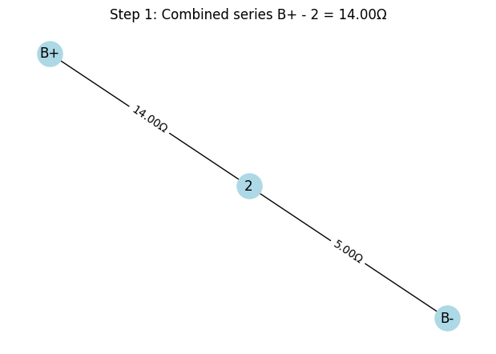
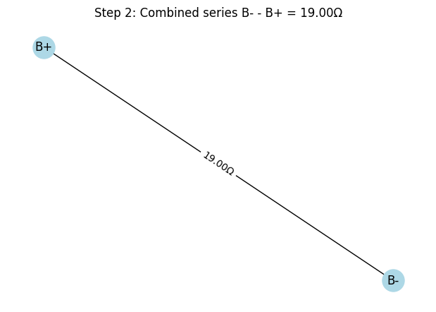
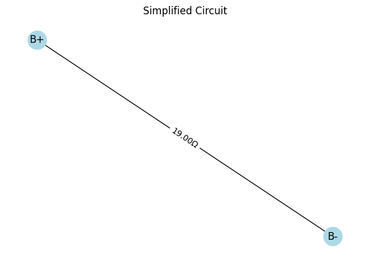
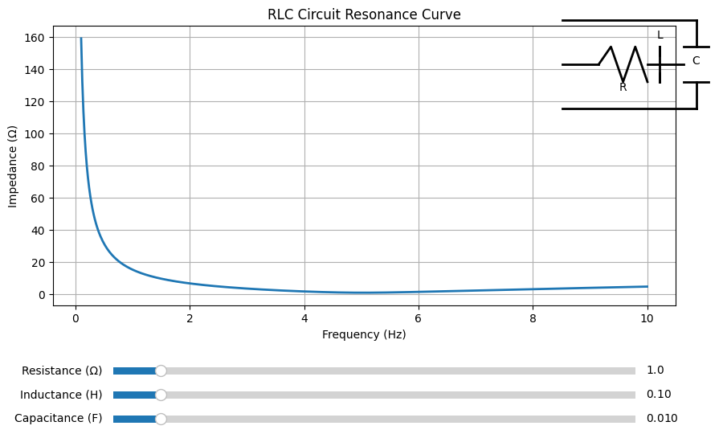


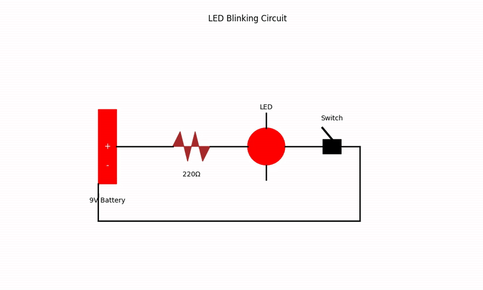
LED Blinking Circuit Explanation
This is a basic LED blinking circuit powered by a 9V battery. The components in the circuit are:
- 9V Battery: Power supply providing constant voltage.
- 220Ω Resistor: Limits the current to protect the LED.
- LED (Light Emitting Diode): Emits light when current flows through it.
- Switch: Controls the flow of current (ON/OFF).
Circuit Path
When the switch is closed (ON), the electrical current flows from the positive terminal of the battery through the resistor, then the LED, and finally returns to the negative terminal of the battery.
Purpose of the Resistor
The resistor is crucial to prevent excessive current from damaging the LED.
Using Ohm's Law:
Where:
- \( V \) = Voltage across the resistor and LED (approximately 9V from battery)
- \( I \) = Current through the circuit
- \( R \) = Resistance (220Ω)
Assuming the LED forward voltage drop is approximately 2V:
Then the current \( I \) is:
This is within safe operating limits for most standard LEDs.
Conclusion
When the switch is turned ON, the LED lights up as current flows through the circuit. The resistor ensures that the current remains safe for the LED.
Series vs. Parallel Circuit Explanation
This image compares two fundamental types of electrical circuits: Series and Parallel.
Series Circuit
In a series circuit, components are connected end-to-end, forming a single path for current to flow.
Characteristics:
- Current flows through each component sequentially.
- If one component fails, the entire circuit stops working.
- The total resistance increases:
- The current is the same through all components:
- Voltage is divided among the components:
Example in Image: One bulb is removed or broken, so the other bulb also goes out.
Parallel Circuit
In a parallel circuit, components are connected across the same voltage source, forming multiple paths for the current.
Characteristics:
- Each component gets the same voltage:
- The total current is the sum of the currents in each branch:
- The total resistance is less than the smallest resistor:
Example in Image: One bulb is removed or broken, but the other bulb continues to work.
🔍 Summary Table
| Feature | Series Circuit | Parallel Circuit |
|---|---|---|
| Path for current | One | Multiple |
| Effect of break | Entire circuit fails | Other paths still work |
| Voltage distribution | Divided | Equal |
| Resistance | Increases | Decreases |